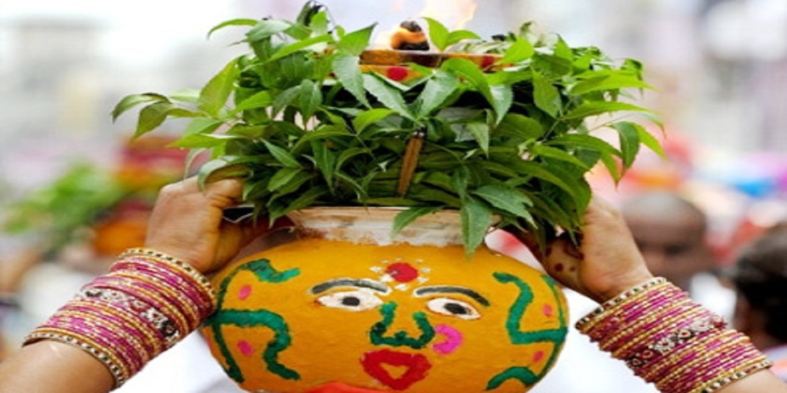
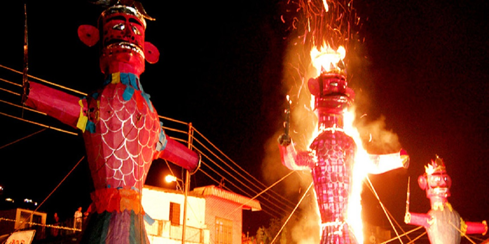
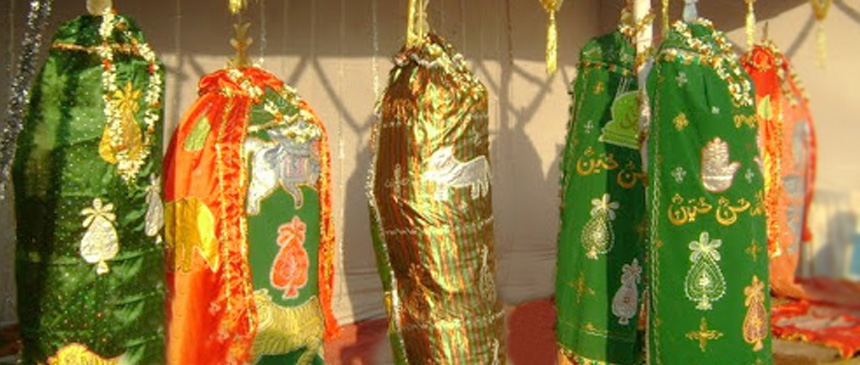

LOCAL FESTS

Bonalu
Bonalu is a Hindu Festival where Goddess Mahakali is worshiped. It is an annual festival celebrated in the twin Cities Hyderabad and Secunderabad

Dussehra
Vijayadashami, a festival that symbolizes the victory of good over evil, is celebrated with traditional fervor, devotion and gaiety across Telangana.

Peerla Panduga
Muharram, also called Peerla Panduga is an important festival in the state of Telangana. Muharram is a festival marked by processions.